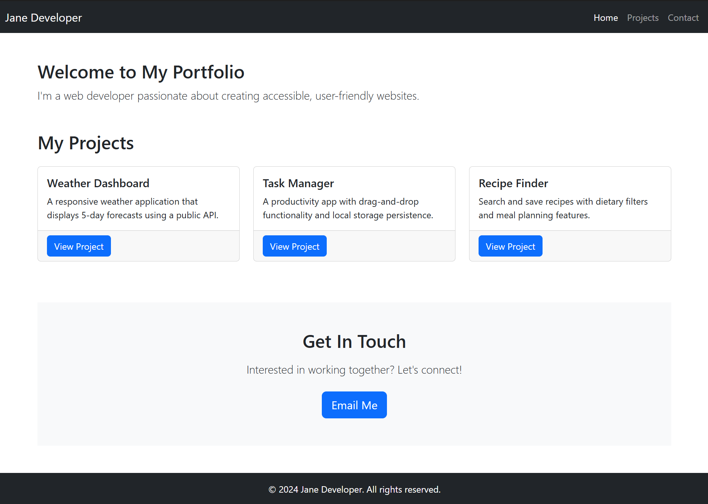

CSS Frameworks, Git & Secure Development Practices
1. Lesson Overview
Lesson Details
Duration: 90-120 minutes
Focus: CSS frameworks, version control with Git, and secure software development lifecycle
Mode: Self-paced with hands-on activities
Prerequisites:
- Understanding of HTML and CSS basics
- JavaScript fundamentals
- Basic command line familiarity
- Understanding of web security concepts (client-side security, input validation)
2. Learning Objectives
By the end of this lesson, you will be able to:
- Apply CSS frameworks (Bootstrap/Tailwind) to create responsive, accessible web designs
- Use Git for version control including init, add, commit, push, pull, branching, and merging
- Explain the Software Development Lifecycle (SDLC) with integrated security practices
- Evaluate how end-user capabilities and technical literacy influence secure design decisions
- Design user interfaces that prioritise accessibility, privacy, and security
Syllabus Alignment
This lesson covers key content from both:
- Programming for the Web: CSS frameworks, version control, UI/UX principles, accessibility
- Secure Software Architecture: SDLC, privacy by design, user-centred secure design
3. Content Parts
Part 1: CSS Frameworks & Responsive Design (25-30 minutes)
1.1 Introduction to CSS Frameworks
Why CSS Frameworks?
Writing CSS from scratch for every project is time-consuming and error-prone. CSS frameworks provide predesigned CSS classes and components that solve common web development challenges:
- Consistency: Uniform design patterns across your application
- Flexibility: Responsive grid systems that adapt to different screen sizes
- Maintenance: Well-tested code reduces bugs and simplifies updates
- Speed: Faster development with ready-to-use components
- Accessibility: Built-in ARIA attributes and keyboard navigation
Popular Frameworks:
While many CSS frameworks exist, two dominant approaches have emerged:
- Component-based (e.g., Bootstrap): Pre-built components like navbars, cards, buttons
- Utility-first (e.g., Tailwind CSS): Small, single-purpose classes you combine
Framework Choice
This lesson focuses on Bootstrap 5 because:
- Component-based approach is easier for beginners
- Extensive documentation with visual examples
- Large community support
- Quick results (motivating for learners)
The concepts you learn (responsive grids, breakpoints, component thinking) transfer to any framework.
graph LR
A[CSS Framework] --> B[Consistency]
A --> C[Responsiveness]
A --> D[Accessibility]
A --> E[Faster Development]
B --> F[Professional UI]
C --> F
D --> F
E --> F1.2 Understanding Content Delivery Networks (CDNs)
What is a CDN?
A Content Delivery Network (CDN) is a geographically distributed network of servers that work together to deliver web content to users quickly and efficiently.
Think of it like this: Instead of everyone ordering books from one warehouse in Sydney, there are copies of popular books in warehouses across the world. When you order, you get it from the closest warehouse, making delivery much faster.
graph TD
B[CDN]
A[User in Sydney] -->|Requests Bootstrap| B
C[User in London] -->|Requests Bootstrap| B
D[User in Tokyo] -->|Requests Bootstrap| B
B -->|Serves from| E[Sydney Server]
B -->|Serves from| F[London Server]
B -->|Serves from| G[Tokyo Server]
E -->|Fast!| A
F -->|Fast!| C
G -->|Fast!| D
H[Origin Server<br/>Sydney] -.->|Backup| B
style E fill:#e1ffe1
style F fill:#e1ffe1
style G fill:#e1ffe1
style H fill:#ffe1e1Traditional Hosting vs CDN:
Traditional (Single Server):
graph LR
A[User in Australia] -->|Short distance<br/>Fast!| B[Server in Australia]
C[User in Europe] -->|Long distance<br/>Slow!| B
D[User in Asia] -->|Long distance<br/>Slow!| B
style B fill:#ffe1e1With CDN (Distributed Servers):
graph LR
A[User in Australia] -->|Short distance<br/>Fast!| B[CDN Server<br/>Sydney]
C[User in Europe] -->|Short distance<br/>Fast!| D[CDN Server<br/>London]
E[User in Asia] -->|Short distance<br/>Fast!| F[CDN Server<br/>Tokyo]
style B fill:#e1ffe1
style D fill:#e1ffe1
style F fill:#e1ffe1Why Use a CDN?
1. Speed (Reduced Latency)
When you request a file from far away, it takes longer. CDNs serve files from the server closest to you.
Example:
-
Without CDN: User in New York requests Bootstrap from server in Sydney
- Distance: ~16,000 km
- Time: ~200-300ms
-
With CDN: User in New York requests Bootstrap from CDN server in New York
- Distance: Local
- Time: ~20-50ms
That's 4-6x faster!
2. Reduced Server Load
Your server doesn't have to serve popular libraries - the CDN handles it.
Example scenario:
- You build a website with Bootstrap
- 1,000 people visit your site per day
- Each person needs to download Bootstrap CSS (~150 KB)
Without CDN:
- Your server sends: 1,000 × 150 KB = 150 MB/day
- That's 4.5 GB/month from your bandwidth!
- That costs you or your company money
With CDN:
- Your server sends: 0 KB (CDN handles it)
- You save bandwidth and server resources
- CDN has setup costs but cheaper overall
3. Caching Benefits
If a user visited any other website that uses the same CDN link, they already have Bootstrap cached in their browser!
graph TD
A[User visits Website A] -->|Downloads Bootstrap from CDN| B[Browser Cache]
B -->|Stores Bootstrap| C[Cached File]
D[User visits YOUR Website] -->|Needs Bootstrap| E{Already in cache?}
E -->|Yes!| F[Use cached version<br/>No download needed!]
E -->|No| G[Download from CDN]
style F fill:#e1ffe1
style G fill:#fff4e14. Reliability & Redundancy
CDNs have multiple backup servers. If one fails, another takes over automatically.
5. DDoS Protection
CDNs can absorb malicious traffic before it reaches your server.
Who Needs a CDN?
| User Type | Need for CDN? | Why? |
|---|---|---|
| Student learning web dev | Nice to have | Fast setup, free to use |
| Personal blog | Optional | Probably low traffic |
| Small business website | Recommended | Improves user experience |
| E-commerce site | Essential | Speed = sales; global customers |
| News website | Essential | Traffic spikes, global audience |
| Streaming service | Critical | Massive files, many users |
| Enterprise application | Critical | Performance, reliability, security |
General rule: The more traffic or the more global your audience, the more you need a CDN.
When to Use a CDN
Use a CDN when:
- ✅ You're using popular libraries (Bootstrap, jQuery, React)
- ✅ Your users are spread across different countries
- ✅ You want to improve page load speed
- ✅ You're learning/prototyping (easiest setup)
- ✅ You want to reduce your hosting costs
- ✅ Your site experiences traffic spikes
Consider NOT using a CDN when:
- ❌ You need guaranteed offline functionality
- ❌ You have strict privacy/compliance requirements (some CDNs track requests)
- ❌ You're in a restricted network environment (some firewalls block CDNs)
- ❌ You need 100% control over file availability
- ❌ You're developing on a plane/remote location without internet
Understanding CDN Links
Let's break down a CDN URL:
| Part | Meaning |
|---|---|
https:// |
Secure protocol (always use HTTPS!) |
cdn.jsdelivr.net |
The CDN domain |
/npm/ |
Source (npm package registry) |
bootstrap |
Package name |
@5.3.0 |
Specific version (important!) |
/dist/css/ |
Path within the package |
bootstrap.min.css |
The actual file (.min = minified) |
Always Specify Versions
Notice the @5.3.0 in the URL? This locks to a specific version.
- ✅ Good:
bootstrap@5.3.0(specific version) - ❌ Risky:
bootstrap@latest(could break your site when updated)
Security Considerations with CDNs
Subresource Integrity (SRI)
When using a CDN, there's a small risk the file could be tampered with. SRI protects against this:
<link href="https://cdn.jsdelivr.net/npm/bootstrap@5.3.0/dist/css/bootstrap.min.css"
rel="stylesheet"
integrity="sha384-9ndCyUaIbzAi2FUVXJi0CjmCapSmO7SnpJef0486qhLnuZ2cdeRhO02iuK6FUUVM"
crossorigin="anonymous">
What this does:
integrity: Hash of the file's contents- Browser checks: "Does the downloaded file match this hash?"
- If no match → Browser refuses to load it (prevents tampering)
crossorigin="anonymous": Required for CORS security
Where to get SRI hashes?
- Most CDN services provide them automatically
- Bootstrap docs include SRI hashes in their examples
- Generate your own at srihash.org
Practical Example: Comparing Both Approaches
Let's see both methods side-by-side:
Option A: Using CDN (Bootstrap)
<!DOCTYPE html>
<html lang="en">
<head>
<meta charset="UTF-8">
<meta name="viewport" content="width=device-width, initial-scale=1.0">
<title>My Site with CDN</title>
<!-- Just add this link - done! -->
<link href="https://cdn.jsdelivr.net/npm/bootstrap@5.3.0/dist/css/bootstrap.min.css"
rel="stylesheet">
</head>
<body>
<div class="container">
<h1 class="text-primary">Hello Bootstrap!</h1>
</div>
</body>
</html>
Pros:
- ✅ One line of code
- ✅ Works immediately
- ✅ Fast for users worldwide
- ✅ Possibly cached already
Option B: Local Hosting (Bootstrap)
<!DOCTYPE html>
<html lang="en">
<head>
<meta charset="UTF-8">
<meta name="viewport" content="width=device-width, initial-scale=1.0">
<title>My Site with Local Files</title>
<!-- You need to download Bootstrap first and place in /css/ folder -->
<link href="/css/bootstrap.min.css" rel="stylesheet">
</head>
<body>
<div class="container">
<h1 class="text-primary">Hello Bootstrap!</h1>
</div>
</body>
</html>
Additional steps required:
- Download Bootstrap from getbootstrap.com
- Extract files
- Create
cssfolder in your project - Copy
bootstrap.min.cssto that folder - Reference it with relative path
Pros:
- ✅ Works offline
- ✅ Full control
- ✅ No external dependencies
Quick Decision Guide
graph TD
A[Need to use a CSS framework?] --> B{What's your situation?}
B -->|Learning/Prototyping| C[Use CDN]
B -->|Production website| D{Privacy concerns?}
B -->|Need offline support| E[Use Local]
D -->|Yes| E
D -->|No| F{Global audience?}
F -->|Yes| C
F -->|No| G[Either works]
C --> H[jsDelivr or cdnjs]
E --> I[Download and host yourself]
style C fill:#e1ffe1
style E fill:#fff4e1
style H fill:#e1ffe1
style I fill:#fff4e1Key Takeaways
Remember
- CDN = Fast delivery from servers close to users
- Free for popular libraries like Bootstrap, jQuery, React
- Use CDN when learning, prototyping, or serving global users
- Use local hosting when privacy matters or offline access needed
- Always specify versions in CDN URLs to prevent surprises
- Use SRI hashes for security when using CDNs
For this course, we'll use CDN links because they're:
- Faster to set up (focus on learning, not file management)
- Realistic (most developers use CDNs for popular libraries)
- Free and reliable
📝 Activity 1.1: Setting Up Your Portfolio (Start Here!)
Progressive Build Activity
Lets build a professional portfolio page step-by-step using Bootstrap. Each section below teaches a concept, then you immediately apply it.
Starting Point - Plain HTML with Content:
Create a new file called portfolio.html and start with this basic structure:
<!DOCTYPE html>
<html lang="en">
<head>
<meta charset="UTF-8">
<meta name="viewport" content="width=device-width, initial-scale=1.0">
<title>Jane Developer - Portfolio</title>
</head>
<body>
<header>
<h1>Jane Developer</h1>
<nav>
<a href="#home">Home</a>
<a href="#projects">Projects</a>
<a href="#contact">Contact</a>
</nav>
</header>
<main>
<section id="home">
<h2>Welcome to My Portfolio</h2>
<p>I'm a web developer passionate about creating accessible, user-friendly websites.</p>
</section>
<section id="projects">
<h2>My Projects</h2>
<article>
<h3>Weather Dashboard</h3>
<p>A responsive weather application that displays 5-day forecasts using a public API.</p>
<a href="#">View Project</a>
</article>
<article>
<h3>Task Manager</h3>
<p>A productivity app with drag-and-drop functionality and local storage persistence.</p>
<a href="#">View Project</a>
</article>
<article>
<h3>Recipe Finder</h3>
<p>Search and save recipes with dietary filters and meal planning features.</p>
<a href="#">View Project</a>
</article>
</section>
<section id="contact">
<h2>Get In Touch</h2>
<p>Interested in working together? Let's connect!</p>
<a href="mailto:jane@example.com">Email Me</a>
</section>
</main>
<footer>
<p>© 2024 Jane Developer. All rights reserved.</p>
</footer>
</body>
</html>
Open this in your browser. It should display plain, unstyled content. We'll now transform this step-by-step!
Step 1: Adding Bootstrap to Your Project (5 minutes)
Add these lines to your <head> section (right before the closing </head> tag):
<!-- Bootstrap CSS -->
<link href="https://cdn.jsdelivr.net/npm/bootstrap@5.3.0/dist/css/bootstrap.min.css"
rel="stylesheet">
<!-- Bootstrap JavaScript (for interactive components) -->
<script src="https://cdn.jsdelivr.net/npm/bootstrap@5.3.0/dist/js/bootstrap.bundle.min.js"></script>
</head>
Refresh your browser. Notice the font changed slightly? Bootstrap's default typography is now applied!
Step 2: Improving Typography & Spacing (5 minutes)
Concept: Bootstrap Utility Classes
Bootstrap provides utility classes for common styling needs. Let's add some breathing room to your page.
Container Classes:
container: Fixed-width, centred container with responsive breakpointscontainer-fluid: Full-width containermy-5: Margin on Y-axis (top and bottom), size 5py-3: Padding on Y-axis, size 3
🔨 Add Containers and Spacing
Wrap your <main> content in a container and add spacing to sections:
<body>
<header>
<h1>Jane Developer</h1>
<nav>
<a href="#home">Home</a>
<a href="#projects">Projects</a>
<a href="#contact">Contact</a>
</nav>
</header>
<main class="container my-5"> <!-- New code -->
<section id="home" class="mb-5">
<h2>Welcome to My Portfolio</h2>
<p class="lead">I'm a web developer passionate about creating accessible, user-friendly websites.</p>
</section>
<section id="projects" class="mb-5">
<h2 class="mb-4">My Projects</h2>
<article class="mb-4">
<h3>Weather Dashboard</h3>
<p>A responsive weather application that displays 5-day forecasts using a public API.</p>
<a href="#">View Project</a>
</article>
<article class="mb-4">
<h3>Task Manager</h3>
<p>A productivity app with drag-and-drop functionality and local storage persistence.</p>
<a href="#">View Project</a>
</article>
<article class="mb-4">
<h3>Recipe Finder</h3>
<p>Search and save recipes with dietary filters and meal planning features.</p>
<a href="#">View Project</a>
</article>
</section>
<section id="contact">
<h2>Get In Touch</h2>
<p>Interested in working together? Let's connect!</p>
<a href="mailto:jane@example.com">Email Me</a>
</section>
</main>
<footer class="bg-dark text-white text-center py-3">
<p class="mb-0">© 2024 Jane Developer. All rights reserved.</p>
</footer>
</body>
Classes you added:
container my-5: Centers content with margin top/bottommb-5,mb-4: Margin bottom for spacing between sectionslead: Makes the intro paragraph largerbg-dark text-white text-center py-3: Dark background, white text, centered, padding top/bottommb-0: Removes default margin from footer paragraph
Refresh and see the difference! Your page should have better spacing and a styled footer.
Step 3: Creating a Professional Navigation Bar (8 minutes)
Concept: Bootstrap Navbar Component
A navbar is a complex component that needs to:
- Look good on all screen sizes
- Collapse into a hamburger menu on mobile
- Be keyboard accessible
- Have clear visual states (hover, active)
Bootstrap's navbar handles all of this for you!
Key Classes:
navbar: Base navbar classnavbar-expand-lg: Expand to horizontal on large screens, collapse on smallnavbar-dark bg-dark: Dark themenavbar-toggler: Hamburger button for mobilecollapse navbar-collapse: Content that collapses on mobile
🔨 Replace the Header
Replace your entire <header> section with this Bootstrap navbar:
<nav class="navbar navbar-expand-lg navbar-dark bg-dark">
<div class="container-fluid">
<a class="navbar-brand" href="#">Jane Developer</a>
<button class="navbar-toggler"
type="button"
data-bs-toggle="collapse"
data-bs-target="#navbarNav"
aria-controls="navbarNav"
aria-expanded="false"
aria-label="Toggle navigation">
<span class="navbar-toggler-icon"></span>
</button>
<div class="collapse navbar-collapse" id="navbarNav">
<ul class="navbar-nav ms-auto">
<li class="nav-item">
<a class="nav-link active" aria-current="page" href="#home">Home</a>
</li>
<li class="nav-item">
<a class="nav-link" href="#projects">Projects</a>
</li>
<li class="nav-item">
<a class="nav-link" href="#contact">Contact</a>
</li>
</ul>
</div>
</div>
</nav>
New features:
ms-auto: Pushes navigation links to the right (margin-start: auto)active: Highlights current pagearia-*attributes: Screen reader accessibility- Responsive collapse: Try resizing your browser!
Test it: Make your browser window narrow. The navigation should collapse into a hamburger menu!
Step 4: Responsive Grid System (8 minutes)
Concept: Bootstrap's 12-Column Grid
Bootstrap divides the page into 12 columns. You specify how many columns each element should take at different screen sizes.
Breakpoints:
| Breakpoint | Class | Screen Width | Device |
|---|---|---|---|
| Extra small | (none) | <576px | Phone portrait |
| Small | sm |
≥576px | Phone landscape |
| Medium | md |
≥768px | Tablet |
| Large | lg |
≥992px | Desktop |
| Extra large | xl |
≥1200px | Large desktop |
Example:
<div class="row">
<div class="col-12 col-md-6 col-lg-4">
<!-- Mobile: full width (12/12)
Tablet: half width (6/12)
Desktop: one-third width (4/12) -->
</div>
</div>
graph TD
A[Screen Size] --> B{Width?}
B -->|"< 768px<br/>(Mobile)"| C["col-12<br/>Full Width<br/>███████████"]
B -->|"≥ 768px<br/>(Tablet)"| D["col-md-6<br/>Half Width<br/>█████ | █████"]
B -->|"≥ 992px<br/>(Desktop)"| E["col-lg-4<br/>One-Third<br/>███ | ███ | ███"]
style C fill:#ffe1e1
style D fill:#fff4e1
style E fill:#e1ffe1🔨 Make Projects Responsive
Update your projects section to use Bootstrap's grid:
<section id="projects" class="mb-5">
<h2 class="mb-4">My Projects</h2>
<div class="row">
<div class="col-12 col-md-6 col-lg-4 mb-4">
<article>
<h3>Weather Dashboard</h3>
<p>A responsive weather application that displays 5-day forecasts using a public API.</p>
<a href="#">View Project</a>
</article>
</div>
<div class="col-12 col-md-6 col-lg-4 mb-4">
<article>
<h3>Task Manager</h3>
<p>A productivity app with drag-and-drop functionality and local storage persistence.</p>
<a href="#">View Project</a>
</article>
</div>
<div class="col-12 col-md-6 col-lg-4 mb-4">
<article>
<h3>Recipe Finder</h3>
<p>Search and save recipes with dietary filters and meal planning features.</p>
<a href="#">View Project</a>
</article>
</div>
</div>
</section>
What you added:
<div class="row">: Creates a horizontal groupcol-12: Full width on mobilecol-md-6: Half width on tablets (2 projects per row)col-lg-4: One-third width on desktop (3 projects per row)
Test responsiveness: Resize your browser and watch the projects reorganise!
Step 5: Bootstrap Cards for Professional Display (8 minutes)
Concept: Card Component
Cards are flexible containers for displaying content. They include:
- Optional image
- Card body with title and text
- Optional footer
- Built-in styling and shadows
Basic Card Structure:
<div class="card">
<img src="image.jpg" class="card-img-top" alt="Description">
<div class="card-body">
<h5 class="card-title">Title</h5>
<p class="card-text">Content goes here.</p>
<a href="#" class="btn btn-primary">Action</a>
</div>
</div>
🔨 Convert Projects to Cards
Replace the <article> elements with Bootstrap cards:
<section id="projects" class="mb-5">
<h2 class="mb-4">My Projects</h2>
<div class="row">
<div class="col-12 col-md-6 col-lg-4 mb-4">
<div class="card h-100">
<div class="card-body">
<h5 class="card-title">Weather Dashboard</h5>
<p class="card-text">A responsive weather application that displays 5-day forecasts using a public API.</p>
</div>
<div class="card-footer">
<a href="#" class="btn btn-primary">View Project</a>
</div>
</div>
</div>
<div class="col-12 col-md-6 col-lg-4 mb-4">
<div class="card h-100">
<div class="card-body">
<h5 class="card-title">Task Manager</h5>
<p class="card-text">A productivity app with drag-and-drop functionality and local storage persistence.</p>
</div>
<div class="card-footer">
<a href="#" class="btn btn-primary">View Project</a>
</div>
</div>
</div>
<div class="col-12 col-md-6 col-lg-4 mb-4">
<div class="card h-100">
<div class="card-body">
<h5 class="card-title">Recipe Finder</h5>
<p class="card-text">Search and save recipes with dietary filters and meal planning features.</p>
</div>
<div class="card-footer">
<a href="#" class="btn btn-primary">View Project</a>
</div>
</div>
</div>
</div>
</section>
New features:
card: Creates card container with border and shadowh-100: Makes all cards equal height (even with different content lengths)card-body: Main content areacard-titleandcard-text: Proper typographycard-footer: Footer area for actionsbtn btn-primary: Bootstrap button styling
Your page should now look more professional!
Step 6: Improving the Contact Section (5 minutes)
Concept: Bootstrap Buttons
Bootstrap provides various button styles for different purposes:
| Class | Purpose | Color |
|---|---|---|
btn-primary |
Primary action | Blue |
btn-secondary |
Secondary action | Gray |
btn-success |
Positive action | Green |
btn-danger |
Destructive action | Red |
btn-outline-* |
Outlined version | Border only |
🔨 Style the Contact Section
Update your contact section with better styling:
<section id="contact" class="text-center py-5 bg-light">
<h2 class="mb-3">Get In Touch</h2>
<p class="lead mb-4">Interested in working together? Let's connect!</p>
<a href="mailto:jane@example.com" class="btn btn-primary btn-lg">Email Me</a>
</section>
Classes added:
text-center: Centers all textpy-5: Adds vertical paddingbg-light: Light gray backgroundlead: Larger paragraph textbtn btn-primary btn-lg: Large primary button

📝 Activity 1.2: Accessibility Audit (10 minutes)
Ensure Your Site Works for Everyone
Now that we have a styled page, let's verify it's accessible to all users.
Part A: Built-in Accessibility Check (5 minutes)
Bootstrap includes many accessibility features, but you need to verify you're using them correctly.
✅ Accessibility Checklist:
Go through the portfolio.html and verify:
- Semantic HTML: Used
<nav>,<main>,<section>,<footer>,<article> - Heading Hierarchy: h1 → h2 → h3 in proper order (no skipping levels)
- Link Purpose: Links clearly describe where they go
- ✅ "View Project" (in context of project title)
- ❌ "Click here"
- ARIA Attributes: Navbar toggler has proper ARIA labels
- Check for
aria-label="Toggle navigation" - Check for
aria-current="page"on active link
- Check for
- Color Contrast: Bootstrap's default colors meet WCAG AA standards
- Dark navbar (white on dark) ✅
- Primary buttons (white on blue) ✅
- Responsive Design: Works on mobile, tablet, and desktop
Part B: Keyboard Navigation Test (3 minutes)
Test your page using only your keyboard:
- Close or ignore your mouse/trackpad
- Press
Tabrepeatedly to move through interactive elements - Press
Enterto activate links - Press
Shift + Tabto move backwards
Questions to answer:
- Can you reach every link and button?
- Is it clear which element currently has focus? (Should have blue outline)
- Can you open the mobile menu using keyboard? (when window is narrow)
- Is the tab order logical (top to bottom, left to right)?
Part C: Screen Reader Test (2 minutes)
If possible, test with a screen reader:
- Windows: Narrator (Win + Ctrl + Enter)
- macOS: VoiceOver (Cmd + F5)
- Linux: Orca
Listen for:
- Does it announce "navigation" for the navbar?
- Does it read project titles and descriptions clearly?
- Does it announce button purposes ("View Project button")?
If you can't test with screen reader: That's okay! Just verify your HTML is semantic and has proper ARIA attributes.
Part 1 Summary: What You've Built
Congratulations! You've transformed a plain HTML page into a professional, responsive, accessible portfolio using Bootstrap.
What you learned:
✅ CSS frameworks save time and ensure consistency
✅ CDN hosting is fastest for learning and prototyping
✅ Bootstrap components (navbar, cards, buttons) provide professional styling
✅ Responsive grid adapts layouts to different screen sizes
✅ Accessibility is built into Bootstrap but requires correct usage
✅ Progressive enhancement - build up features step-by-step
Your final page has:
- ✅ Responsive navigation that collapses on mobile
- ✅ Professional card-based project display
- ✅ Responsive grid (1 column mobile → 2 tablet → 3 desktop)
- ✅ Accessible, semantic HTML
- ✅ Consistent, professional styling
Bootstrap Documentation
Bookmark getbootstrap.com - you'll reference it constantly!
When you need a component:
- Visit the docs
- Find what you need (navbar, modal, form, etc.)
- Copy the example
- Customise for your project
Next up: Learn how to track changes to this code with Git version control!
Part 2: Version Control with Git (25-30 minutes)
2.1 Why Version Control?
Version control systems track changes to code over time, enabling:
- History: See what changed, when, and by whom
- Collaboration: Multiple developers working on same codebase
- Backup: Recover previous versions if something breaks
- Branching: Experiment without affecting main code
- Security: Track who made security-sensitive changes
graph TD
A[Local Changes] -->|git add| B[Staging Area]
B -->|git commit| C[Local Repository]
C -->|git push| D[Remote Repository]
D -->|git pull| C
C -->|git checkout| E[Working Directory]
style A fill:#ffe1e1
style B fill:#fff4e1
style C fill:#e1f5ff
style D fill:#e1ffe12.2 Git Fundamentals
Core Commands:
# Initialise a new Git repository
git init
# Check status of files
git status
# Stage files for commit
git add filename.html
git add . # Stage all changes
# Commit staged changes
git commit -m "Add responsive navigation"
# Connect to remote repository
git remote add origin https://github.com/username/repo.git
# Push changes to remote
git push origin main
# Pull changes from remote
git pull origin main
Commit Messages
Write clear, descriptive commit messages:
- ✅ "Fix XSS vulnerability in search input"
- ✅ "Add responsive grid to portfolio page"
- ❌ "Updated stuff"
- ❌ "Fixed bug"
2.3 Branching & Merging
Branches allow parallel development without interfering with stable code.
gitGraph
commit id: "Initial commit"
commit id: "Add homepage"
branch feature-contact-form
checkout feature-contact-form
commit id: "Create contact form"
commit id: "Add validation"
checkout main
commit id: "Update navbar"
merge feature-contact-form
commit id: "Deploy v1.0"Branch Workflow:
# Create and switch to new branch
git checkout -b feature-contact-form
# Make changes and commit
git add contact.html
git commit -m "Add contact form with validation"
# Switch back to main branch
git checkout main
# Merge feature branch into main
git merge feature-contact-form
# Delete feature branch (optional)
git branch -d feature-contact-form
Why Branch?
- Test features without breaking main code
- Security patches can be developed separately
- Multiple team members work on different features
- Easy rollback if feature doesn't work
📝 Activity 2.1: Initialise Git Repository (15 minutes)
Version Control Practice
Set up Git for your portfolio project.
Steps:
-
Initialise repository:
-
Create .gitignore file:
-
Stage and commit initial files:
-
Create a GitHub repository (github.com → New repository)
-
Connect local to remote:
Verification:
- Check GitHub to confirm files uploaded
- Run
git logto see commit history
📝 Activity 2.2: Branching Workflow (10 minutes)
Feature Development
Practice using branches for new features.
Scenario: Add a dark mode toggle to your portfolio.
-
Create feature branch:
-
Make changes:
- Add a dark mode CSS file
- Add toggle button to navbar
-
Commit your changes:
-
Merge back to main:
-
Push to remote:
Reflection Question: Why is it better to develop new features in separate branches rather than directly on main?
Part 3: Software Development Lifecycle (SDLC) (20-25 minutes)
3.1 Understanding the SDLC
The Software Development Lifecycle is a structured process for building secure, reliable software.
graph TD
A[1. Requirements] --> B[2. Design]
B --> C[3. Development]
C --> D[4. Testing]
D --> E[5. Deployment]
E --> F[6. Maintenance]
F --> G{New Requirements?}
G -->|Yes| A
G -->|No| F
style A fill:#e1f5ff
style B fill:#e1f5ff
style C fill:#fff4e1
style D fill:#ffe1e1
style E fill:#e1ffe1
style F fill:#f0e1ff3.2 SDLC Phases with Security Integration
Security by Design
Security should be integrated at EVERY phase, not added at the end.
1. Requirements Definition
- What: Identify what the software must do
- Security Integration:
- Define security requirements (authentication, data protection)
- Identify sensitive data and compliance needs (OAIC, GDPR, COPPA)
- Consider threat landscape
- Example: Users must authenticate with MFA; passwords must be hashed with bcrypt
2. Design & Specifications
- What: Plan architecture, database schema, UI/UX
- Security Integration:
- Threat modelling (what could go wrong?)
- Privacy by design principles
- Secure architecture patterns
- Example: Design database with encrypted password field; plan rate limiting for login
3. Development
- What: Write code implementing the design
- Security Integration:
- Secure coding practices (input validation, parameterised queries)
- Code reviews focused on security
- Use version control (Git) for accountability
- Example: Implement input sanitisation; use prepared statements for SQL
4. Testing & Debugging
- What: Verify functionality and find bugs
- Security Integration:
- Security testing (penetration testing, vulnerability scanning)
- Test edge cases and malicious inputs
- Automated security checks
- Example: Test SQL injection attempts; verify XSS protection
5. Deployment
- What: Release software to production
- Security Integration:
- Secure configuration (HTTPS, secure headers)
- Access controls and monitoring
- Incident response plan
- Example: Enable HTTPS; configure Content Security Policy headers
6. Maintenance
- What: Fix bugs, add features, update dependencies
- Security Integration:
- Regular security patches
- Monitor for vulnerabilities
- Update dependencies
- Example: Apply security patches; update to latest framework versions
📝 Activity 3.1: SDLC Documentation (15 minutes)
Project Planning
Document SDLC phases for a simple web application.
Project: Student Grade Tracker
Students can log in, view their grades, and see GPA calculations.
Your Task: Complete the SDLC documentation below:
| Phase | Activities | Security Considerations |
|---|---|---|
| Requirements | User login, view grades, calculate GPA | - Authentication and Authorisation - Data protection - Input validation - Compliance |
| Design | Database schema (users, grades tables), UI mockups | Your answer |
| Development | Your answer | Your answer |
| Testing | Your answer | Your answer |
| Deployment | Your answer | Your answer |
| Maintenance | Your answer | Your answer |
Hint: Think about:
- What data is sensitive?
- What could attackers try to do?
- How can we prevent unauthorised access?
Part 4: Privacy by Design & User-Centred Security (15-20 minutes)
4.1 Privacy by Design Principles
Privacy by Design means building privacy into systems from the start, not adding it later.
Core Principles
- Proactive, Not Reactive: Anticipate and prevent privacy issues before they occur.
- Privacy as the Default Setting: Personal data is automatically protected without user action.
- Privacy Embedded into Design: Privacy is built into the system architecture, not added later.
- Full Functionality: Achieve both privacy and usability—no trade-offs.
- End-to-End Security: Protect data throughout its entire lifecycle, from collection to deletion.
- Visibility and Transparency: Ensure operations remain open, auditable, and accountable.
- User-Centric: Prioritise user interests and control over their personal data.
Examples:
| Practice | Privacy by Design | Privacy Bolted-On |
|---|---|---|
| Data Collection | Collect only necessary data | Collect everything, allow opt-out |
| Password Storage | Hash passwords immediately | Store plaintext, encrypt later |
| Analytics | Anonymous by default | Track everything, anonymise on request |
| Data Retention | Auto-delete after period | Keep indefinitely unless requested |
4.2 End User Capabilities & Design Decisions
Critical Consideration
Design should minimise exclusion by supporting users with diverse abilities, levels of technical literacy, and contexts.
User Capability Spectrum:
graph LR
A[Novice Users] --> B[Intermediate Users] --> C[Advanced Users]
A --> D[Simple interfaces<br/>Clear labels<br/>Guided workflows]
B --> E[Some customisation<br/>Helpful tooltips<br/>Common shortcuts]
C --> F[Advanced options<br/>Power features<br/>Technical details]
style A fill:#ffe1e1
style B fill:#fff4e1
style C fill:#e1ffe1Design Implications:
| User Characteristic | Design Response |
|---|---|
| Low technical literacy | Clear, non-technical language; visual indicators; progressive disclosure |
| Visual impairment | High contrast; screen reader support; keyboard navigation |
| Motor difficulties | Large click targets; no time-sensitive actions; keyboard alternatives |
| Limited bandwidth | Optimised images; minimal JavaScript; offline functionality |
| Mobile-only access | Mobile-first design; touch-friendly controls; responsive layouts |
| Privacy concerns | Transparent data practices; granular controls; local-first options |
Security UX Examples:
| Good (User-Friendly) ✅ | Bad (Technical Jargon) ❌ |
|---|---|
| "Choose a password with at least 12 characters, including numbers and symbols" | "Password must match regex: ^(?=.*[A-Z])(?=.*[0-9])(?=.*[@#$%]).{12,}$" |
| "We'll remember you for 30 days (you can change this)" | "Check box to enable persistent authentication token with 2592000s TTL" |
| "We protect your data with encryption - like a secure lock on your information" | "Data encrypted using AES-256-GCM with HKDF key derivation" |
| "Your session will automatically log out after 15 minutes of inactivity for your security" | "Idle session timeout configured to 900000ms before token invalidation" |
📝 Activity 4.1: Privacy by Design Analysis (10 minutes)
Privacy by Design Challenge
You've been hired to redesign a social media app that has serious privacy issues.
Current Design (Privacy Nightmare 😱):
A social media app currently has these features:
- Requires real name, birthdate, phone number to create account
- Collects location data continuously in the background
- Shares user data with third parties by default (for "personalised ads")
- No way to download or delete your data
- Passwords stored with MD5 hashing
- All posts are public by default
- Reads contact list and suggests friends automatically
Your Task: Redesign for Privacy
Using the 7 Privacy by Design principles, redesign this app to respect user privacy while maintaining core functionality.
Part A: Identify the Problems (5 minutes)
For each current feature, identify which Privacy by Design principle(s) it violates:
| Current Feature | Principle Violated | Why is this a problem? |
|---|---|---|
| Requires real name, birthdate, phone | Your answer | Your answer |
| Continuous location tracking | Your answer | Your answer |
| Third-party sharing by default | Your answer | Your answer |
| No data export/deletion | Your answer | Your answer |
| MD5 password hashing | Your answer | Your answer |
Part B: Propose Solutions (10 minutes)
Redesign each feature following Privacy by Design principles:
| Feature Area | Your Privacy-Friendly Redesign | Which Principle(s) Applied? |
|---|---|---|
| Account Creation | Example: Allow usernames instead of real names; make phone optional | Privacy as Default, Minimal Collection |
| Location Data | Your answer | Your answer |
| Data Sharing | Your answer | Your answer |
| User Data Control | Your answer | Your answer |
| Password Security | Your answer | Your answer |
Part C: Reflection (5 minutes)
Answer these questions:
-
Trade-offs: What functionality might be reduced by your privacy improvements? Is it worth it?
-
User Experience: How do your changes affect ease of use? Can privacy AND usability coexist?
-
Business Impact: The original design collected data for advertising revenue. How could your privacy-friendly design still be financially sustainable?
Bonus Challenge:
Design the user interface for one of your privacy features. For example:
- What would the "Data Export" page look like?
- How would you explain location permissions to users?
- How would privacy settings be organised?
Sketch it on paper or describe it in detail.
📝 Activity 4.2: Accessible Security Design (10 minutes)
Inclusive Design Challenge
Design a secure password reset flow that works for all users.
Scenario: User forgot their password.
Constraints:
- Some users have visual impairments
- Some users have limited technical knowledge
- Some users may not have access to secondary email/phone
- Must prevent account takeover attacks
Your Design:
Sketch or describe a password reset process that:
- Clearly explains what will happen
- Provides multiple verification options
- Works with screen readers
- Uses simple, non-technical language
- Prevents unauthorised resets
Consider:
- What verification methods could you offer?
- How do you balance security with accessibility?
- What instructions would you provide?
- How would you confirm the reset was successful?
Part 5: Integration & Best Practices (10-15 minutes)
5.1 Bringing It All Together
Professional web development integrates all these concepts:
graph TD
A[Modern Web Development] --> B[CSS Frameworks]
A --> C[Version Control]
A --> D[SDLC]
A --> E[Security & Privacy]
B --> F[Responsive<br/>Accessible<br/>Maintainable]
C --> F
D --> F
E --> F
F --> G[Professional<br/>Secure<br/>User-Centred<br/>Application]
style A fill:#4A90E2
style G fill:#50E3C25.2 Development Workflow Example
Building a Secure Web App:
-
Plan (SDLC: Requirements & Design)
- Define features and security requirements
- Design with privacy by default
- Consider accessibility from start
-
Setup (Version Control)
- Initialise Git repository
- Create
.gitignorefor sensitive files - Set up branching strategy
-
Develop (Framework & Coding)
- Choose CSS framework (Bootstrap/Tailwind)
- Implement responsive design
- Follow secure coding practices
- Commit regularly with clear messages
-
Test (Quality & Security)
- Test responsiveness across devices
- Verify accessibility (keyboard, screen reader)
- Security testing (XSS, SQL injection attempts)
- Create testing branch for experiments
-
Deploy (Production)
- Merge tested features to main
- Configure secure hosting (HTTPS)
- Set up monitoring
- Tag release version in Git
-
Maintain (Ongoing)
- Monitor for security issues
- Update dependencies
- Track changes with Git
- Iterate based on user feedback
📝 Activity 5.1: Security & Privacy Review (15 minutes)
Synthesis Activity
Apply your knowledge of SDLC, privacy by design, and accessibility to evaluate a real-world scenario.
Scenario: School Assignment Submission System
Your school wants to build a web application where students can: - Log in with student ID and password - Upload assignment files (PDFs, Word docs) - See their grades and feedback from teachers - Download their previous submissions
Part A: SDLC Security Integration (5 minutes)
For each SDLC phase, identify ONE specific security or privacy consideration for this system:
| SDLC Phase | Your Security/Privacy Consideration |
|---|---|
| Requirements | Example: "Student data falls under OAIC rules so we need compliance requirements" |
| Design | Your answer |
| Development | Your answer |
| Testing | Your answer |
| Deployment | Your answer |
| Maintenance | Your answer |
Part B: Privacy by Design Application (5 minutes)
Which Privacy by Design principles are most critical for this system? Choose 3 and explain how you'd apply them:
-
Principle: __ Application: __
-
Principle: __ Application: __
-
Principle: __ Application: __
Part C: User-Centred Security (5 minutes)
Answer these questions considering different user capabilities:
- A student with visual impairment needs to upload an assignment.
- What accessibility features must the upload form have?
-
How would you ensure error messages are screen-reader friendly?
-
A student with limited technical literacy forgets their password.
- Design a password reset flow that is both secure AND easy to understand
-
What instructions would you provide? (Write them in plain language)
-
A student using a slow mobile connection needs to check grades.
- How would you optimise the page for low bandwidth?
- What Git workflow would help you test mobile performance?
Part D: Quick Knowledge Check (Multiple Choice)
Question 1: Which Git command would you use to save your current work before switching to work on a security patch?
Question 2: A student complains they can't navigate the file upload form using only their keyboard. This violates which principle?
Question 3: In which SDLC phase should you implement password hashing?
Question 4: The upload form uses a CDN for Bootstrap. The CDN goes down. What happens?
Question 5: Which Bootstrap class makes a layout stack vertically on mobile but display in 3 columns on desktop?
Question 6: A commit message reads: "fix stuff". What's wrong with this?
Question 7: Which is an example of "Privacy as Default"?
Question 8: Why might you choose local hosting over CDN for Bootstrap in a school project?
4. Syllabus Alignment
Programming for the Web
✅ Investigate CSS and its impact
- Covered in Part 1: CSS frameworks for consistency, flexibility, and maintenance
✅ Investigate reasons for version control and apply it when developing web applications
- Covered in Part 2: Git fundamentals, branching, merging, and practical application
✅ Explore types and significance of code libraries for front-end development
- Covered in Part 1: CSS frameworks (Bootstrap/Tailwind) and predesigned CSS classes
✅ Investigate methods to support and manage load times of web pages/applications
- Covered in Part 1.2: CDN vs local hosting analysis
✅ Design and apply UI/UX principles
- Covered in Part 1.3 & Part 4: Responsive design, frameworks, user-centred design
✅ Design UI that considers accessibility and inclusivity
- Covered in Activities 1.2 and 4.2: WCAG guidelines, inclusive design practices
Secure Software Architecture
✅ Interpret and apply fundamental software development steps
- Covered in Part 3: Complete SDLC with all six phases
✅ Describe how capabilities and experience of end users influence secure design features
- Covered in Part 4.2: User capability spectrum and design implications
✅ Use and explain 'privacy by design' approach
- Covered in Part 4.1: Seven privacy by design principles with examples
5. Knowledge Check
Before moving on, verify you can:
- Explain the benefits of using CSS frameworks over custom CSS
- Apply Bootstrap or Tailwind classes to create responsive layouts
- Describe when to use CDN vs local hosting for frameworks
- Initialise a Git repository and make commits
- Create, merge, and delete Git branches
- Write clear, descriptive commit messages
- Identify all six phases of the SDLC
- Explain how security integrates into each SDLC phase
- List the seven Privacy by Design principles
- Describe how end-user capabilities influence design decisions
- Design accessible interfaces following WCAG guidelines
- Implement keyboard navigation and screen reader support
- Evaluate designs for privacy and security concerns
- Apply version control to real development projects
6. Teacher Notes
Differentiation Strategies
For Advanced Students:
- Explore Tailwind CSS as alternative to Bootstrap
- Implement Git workflows with pull requests and code review
- Research DevSecOps and CI/CD integration
- Design complex responsive layouts with CSS Grid
- Investigate WCAG AAA standards (higher accessibility)
- Explore threat modelling frameworks (STRIDE, PASTA)
For Students Needing Support:
- Provide completed Bootstrap examples to modify
- Use GitHub Desktop GUI instead of command line
- Focus on one CSS framework thoroughly
- Provide SDLC templates with prompting questions
- Pair programming for Git activities
- Visual diagrams for Git concepts
- Simplified privacy by design checklist
Alternative Activities:
- Video demonstrations of Git workflows
- Interactive Git tutorials (learngitbranching.js.org)
- Bootstrap/Tailwind playground environments
- Accessibility testing with automated tools
- Collaborative Google Doc for SDLC planning
Common Misconceptions
| Misconception | Reality | Correction Strategy |
|---|---|---|
| "CSS frameworks make sites all look the same" | Frameworks are customisable; provide starting point | Show examples of diverse sites using same framework |
| "Git is only for teams" | Version control benefits solo developers too | Demonstrate rollback and history features |
| "Security is added at testing phase" | Security must be integrated throughout SDLC | Show consequences of late security integration |
| "Accessibility is just for blind users" | Benefits many user groups (motor, cognitive, situational) | Demonstrate keyboard navigation, mobile benefits |
| "Privacy by design means no data collection" | Means collecting only necessary data with consent | Clarify difference between privacy and no data |
| "More commits is better" | Quality over quantity; logical groupings | Teach commit message best practices |
Formative Assessment Opportunities
Observation:
- Monitor Git commit messages for clarity and consistency
- Check responsive design implementation across breakpoints
- Observe accessibility testing approach
Quick Checks:
- "Explain in your own words why we use branches"
- "What security consideration belongs in the Design phase?"
- "Show me how to stage and commit a file"
Exit Tickets:
- "One thing you learned about privacy by design"
- "One accessibility feature you implemented"
- "One Git command you'll use regularly"
Code Review:
- Review Git history for logical progression
- Check Bootstrap/Tailwind class usage for appropriateness
- Verify accessibility attributes in HTML
- Assess responsive design implementation
Reflection Questions:
- "How would your design change for users with low technical literacy?"
- "What security measures did you integrate into each SDLC phase?"
- "How does version control support secure development?"
Extension Activities
- Advanced Git: Explore rebasing, cherry-picking, and Git hooks
- Framework Customisation: Create custom Bootstrap theme or Tailwind configuration
- Automated Accessibility: Integrate Lighthouse CI into Git workflow
- Security Headers: Research and implement Content Security Policy
- Performance: Analyse and optimise load times with developer tools
- Mobile-First: Redesign existing desktop-only site for mobile
- Design System: Create comprehensive design system documentation
Time Management Tips
- Short on time? Focus on Parts 1, 2, and 4; assign Part 3 as homework
- Extra time? Deep dive into Git merge conflicts and resolution strategies
- Flexible pacing: Activities can be shortened or extended based on student progress
- Checkpoint: After Part 2, students should have functional Git repository
Resources for Further Learning
- Bootstrap Documentation
- Tailwind CSS Documentation
- Git Documentation
- WCAG Guidelines
- Privacy by Design Framework
- OWASP Secure SDLC
Summary
This lesson integrated CSS frameworks, version control, and secure development practices to build professional, accessible, privacy-respecting web applications.
You learned that:
- CSS frameworks accelerate development while maintaining consistency and responsiveness
- Version control with Git enables collaboration, accountability, and safe experimentation
- Security and privacy must be integrated throughout the entire SDLC, not added at the end
- User capabilities and accessibility needs should drive design decisions from the start
Continue practising these skills in your projects, and remember: great developers write code that works; exceptional developers write code that's secure, accessible, and respects user privacy.